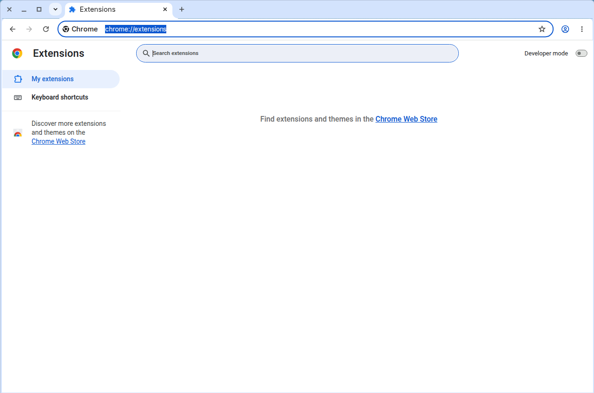
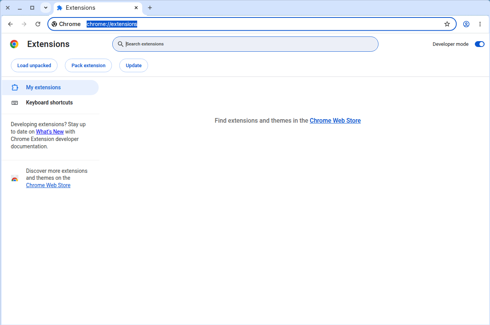
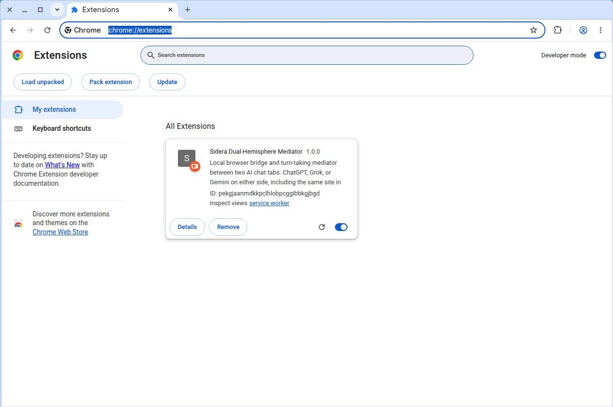

Two stages: run the installer, then load the extension into Google Chrome once. The second stage is needed because current Google Chrome (version 137 and later) no longer lets a program load an extension for you; it must be loaded once by hand. It stays in Chrome afterwards — this is a one-time step, and it is free. (Microsoft Edge, Brave, Vivaldi, and Opera can pick the extension up by themselves when Sidera opens them, but only if that browser was fully closed first, with no window open and nothing left running in the background. If the Sidera button does not appear in one of those browsers, load the extension there by hand the same way as in stage 2.)
About the pictures: the screenshots for steps 1, 2 and 6 of stage 2 are real captures of Google Chrome. The other steps are marked [screenshot pending]. Real Windows captures for them will be added after the first live install on a Windows PC. Until then, follow the text for those steps; it gives the exact buttons and the exact folder.
[screenshot pending] No picture of the installer window yet.
INSTALL.bat in the Sidera folder you downloaded.That copies Sidera to C:\Sidera, installs Python if needed, and registers the connection between the browser and the Sidera program. If Windows asks whether to allow the installer, choose Yes. When it finishes, the installer opens this guide in your web browser.
Open Google Chrome. Click in the address bar at the top, type exactly:
chrome://extensionsand press Enter. This page opens:

Find the Developer mode switch in the top-right corner of the page and click it so it turns blue. Three new buttons appear at the top left, including Load unpacked. Developer mode can stay on; it only means "allow loading an extension from a folder".

Click the Load unpacked button at the top left. A Windows folder window opens, asking you to pick a folder.
[screenshot pending (Windows)] No picture of the Windows folder window yet.
The folder to pick is exactly:
C:\Sidera\chrome-extensionIn the folder window, click in the address bar at the top (the bar that shows the current folder path), type or paste C:\Sidera\chrome-extension, and press Enter. The window now shows the inside of that folder. Because Chrome's folder picker lists only folders, you will see just an adapters folder there and no files. That is normal: you are in the right place.
[screenshot pending (Windows)] No picture of the folder window with
C:\Sidera\chrome-extensionopen yet.
Click Select Folder at the bottom right of the window. The folder to pick is the chrome-extension folder itself — the folder that directly contains the file manifest.json — not the C:\Sidera folder above it and not any folder inside it.
[screenshot pending] No picture of this step yet.
The Sidera Dual-Hemisphere Mediator card appears on the Extensions page. Under its description it shows an ID. Check that the ID reads exactly:
pekgjaanmdkkpclhlobpcggibbkgjbgd
(The screenshot was taken with an earlier build, so its card says version 1.0.0. Your card shows the current version, 1.1.0. The ID is the same.)
The Sidera program on your PC only talks to the extension with this ID. The ID is built into the extension itself, so it is the same whichever folder the extension is loaded from. Still, load it from C:\Sidera\chrome-extension: that is the copy INSTALL.bat keeps up to date, so a later update reaches Chrome (after you click the card's reload arrow or restart Chrome).
Close the Extensions page. From now on, start Sidera by double-clicking the Sidera Mediator icon (desktop or Start menu). It opens ChatGPT and Grok, each in its own window. Click the puzzle-piece icon to the right of Chrome's address bar and pin Sidera Dual-Hemisphere Mediator so its button is always visible, then click that button to open the control popup.
[screenshot pending] No picture of the popup opened from Chrome's toolbar yet.
In the popup, pick the AI and the tab for each side, pair LEFT and RIGHT, and press Start Exchange. If the popup says Not running, the Sidera program has not been started yet: double-click the Sidera Mediator icon.
C:\Sidera\chrome-extension itself — the folder that directly contains manifest.json — not C:\Sidera and not a folder inside chrome-extension.C:\Sidera. It works (the ID is the same), but later updates installed with INSTALL.bat will not reach Chrome. Click Remove on the card and load C:\Sidera\chrome-extension instead.INSTALL.bat again and restart Chrome.